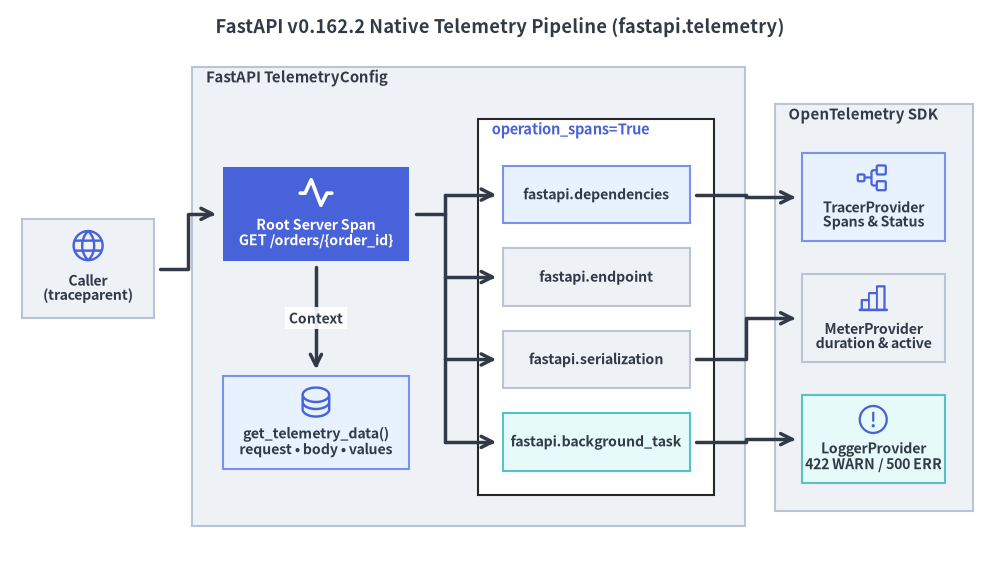
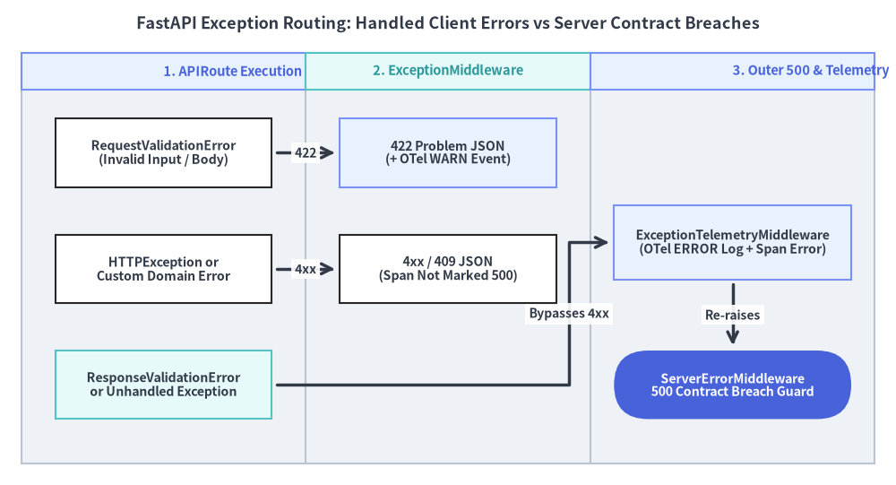

ネイティブ OpenTelemetry と例外処理
FastAPI v0.162.2 は、外部モンキーパッチ不要のネイティブ OpenTelemetry 計装（fastapi.telemetry の TelemetryConfig と get_telemetry_data()）を本体に組み込み、クライアント起因の 4xx / 422 エラーとサーバー側の契約違反である 500 エラーを 2 段階の例外境界で明確に分離します。

1. ネイティブ fastapi.telemetry のアーキテクチャ
従来の外部 ASGI ミドルウェアによる計装では生の ASGI メッセージしか観測できず、依存性注入や Pydantic 直列化、入力検証エラーの内訳までは追跡できませんでした。FastAPI v0.162.2 では FastAPI(telemetry=TelemetryConfig(...)) を渡すだけで、OpenTelemetry セマンティック規約（1.44.0）に準拠した詳細なシグナルがネイティブに出力されます。
- ルート HTTP / WebSocket スパン（
tracing=True）: W3Ctraceparentとbaggageを抽出し、署名付き URL クエリ（sig、X-Amz-Signature、X-Goog-Signatureなど）を自動マスクした上で、ルート確定時にスパン名を"{METHOD} {http.route}"（例:GET /orders/{order_id}）へ更新します。 - 4 つの子操作スパン（
operation_spans=True）: リクエスト処理の各フェーズを専用の子スパンで個別に計測します。fastapi.dependencies:Depends()依存グラフ全体の解決時間。fastapi.endpoint: エンドポイント実行時間（async defコルーチンのawaitまたはワーカースレッドプール実行）。fastapi.serialization: レスポンス検証（response_model）および Pydantic の Rust 製 JSON 直列化時間。fastapi.background_task:BackgroundTasks内の各バックグラウンド処理。
- メトリクスと構造化ログ（
metrics=True,logs=True）:http.server.request.durationヒストグラムとhttp.server.active_requestsカウンターを記録し、422入力検証失敗時にはWARNイベント（fastapi.validation.failed）、未処理例外時にはERRORイベント（http.server.request.exception）を送出します。 - 同期コンテキスト参照（
get_telemetry_data()）: リクエスト処理中に限り、読み取り専用のTelemetryData（request、websocket、body、values、errors）をカスタム SpanProcessor / LogProcessor 等から安全に参照できます。生ペイロードをデフォルトで外部エクスポートせず、レスポンス完了と同時にコンテキスト参照を即座にクリアしてメモリリークを防ぎます。
from typing import Annotated
from fastapi import BackgroundTasks, Depends, FastAPI, Header
from fastapi.telemetry import TelemetryConfig, get_telemetry_data
from fastapi.testclient import TestClient
from opentelemetry.sdk.trace import TracerProvider
from opentelemetry.sdk.trace.export import SimpleSpanProcessor
from opentelemetry.sdk.trace.export.in_memory_span_exporter import InMemorySpanExporter
from pydantic import BaseModel
exporter = InMemorySpanExporter()
provider = TracerProvider()
provider.add_span_processor(SimpleSpanProcessor(exporter))
telemetry_cfg: TelemetryConfig = {
"tracer_provider": provider,
"tracing": True,
"operation_spans": True,
"metrics": False,
"logs": False,
"exclude": lambda scope: scope.get("path") == "/healthz",
}
app = FastAPI(title="Orders Service", telemetry=telemetry_cfg)
class OrderOut(BaseModel):
order_id: int
tenant: str
traced_route: bool
async def resolve_tenant(x_tenant: Annotated[str, Header()] = "acme") -> str:
return x_tenant
@app.get("/healthz")
async def healthz() -> dict[str, str]:
return {"status": "ok"}
@app.get("/orders/{order_id}", response_model=OrderOut)
async def get_order(
order_id: int,
tenant: Annotated[str, Depends(resolve_tenant)],
tasks: BackgroundTasks,
) -> OrderOut:
tdata = get_telemetry_data()
has_context = (
tdata is not None
and tdata.request is not None
and tdata.values is not None
)
tasks.add_task(lambda: None)
return OrderOut(order_id=order_id, tenant=tenant, traced_route=has_context)
client = TestClient(app)
assert client.get("/healthz").status_code == 200
assert len(exporter.get_finished_spans()) == 0 # Excluded via scope filter
res = client.get("/orders/99", headers={"X-Tenant": "globex"})
assert res.json()["traced_route"] is True
span_names = {s.name for s in exporter.get_finished_spans()}
assert {
"GET /orders/{order_id}",
"fastapi.dependencies",
"fastapi.endpoint",
"fastapi.serialization",
"fastapi.background_task",
}.issubset(span_names)
2. 例外階層と RFC 9457 エラーエンベロープ設計
FastAPI は ASGI ミドルウェアオニオン の中で、例外処理を意図的に 2 つの異なるミドルウェア境界 に分割しています。

なぜ ResponseValidationError は 422 ではなく 500 になるのか
- クライアント起因のエラー（
RequestValidationError->422、HTTPException->4xx）: 内側の制御されたエラー境界（@app.exception_handler(...)）で捕捉されます。サーバー自体は仕様どおり正常動作しているため、FastAPI はルートスパンを500異常扱いにせず、入力検証失敗はWARNイベントとして記録します。 - サーバー側の出力契約違反（
ResponseValidationError->500）: バックエンド実装がresponse_modelの必須フィールド欠落や型不一致データを返した場合、ResponseValidationErrorが発生します。これはクライアントの誤りではなく サーバー実装のバグ であるため、4xx例外ハンドラーを素通りして内側の例外スパン記録（StatusCode.ERRORとスタックトレースログ）および外側の500防衛境界へ到達し、内部データの漏洩を防ぎつつ CI テストで即座に検知できるよう設計されています。
RFC 9457（application/problem+json）によるエラー応答の標準化
複数チームが開発する大規模 API では、ドメイン固有例外と RequestValidationError にカスタムハンドラーを登録し、内部スタックトレースや DB エラー詳細を外部へ漏らさず機械可読な RFC 9457 Problem Details 形式に統一します。
from typing import Annotated, Any
from fastapi import FastAPI, Request, status
from fastapi.exceptions import RequestValidationError, ResponseValidationError
from fastapi.responses import JSONResponse
from fastapi.testclient import TestClient
from pydantic import BaseModel, Field
import pytest
app = FastAPI()
class InsufficientInventoryError(Exception):
def __init__(self, sku: str, requested: int, available: int) -> None:
self.sku = sku
self.requested = requested
self.available = available
@app.exception_handler(InsufficientInventoryError)
async def inventory_error_handler(
request: Request, exc: InsufficientInventoryError
) -> JSONResponse:
return JSONResponse(
status_code=status.HTTP_409_CONFLICT,
media_type="application/problem+json",
content={
"type": "https://api.example.com/problems/insufficient-inventory",
"title": "Insufficient Inventory",
"status": 409,
"detail": f"SKU '{exc.sku}' has {exc.available} units; {exc.requested} requested.",
"instance": request.url.path,
},
)
@app.exception_handler(RequestValidationError)
async def validation_problem_handler(
request: Request, exc: RequestValidationError
) -> JSONResponse:
fields = [
{"loc": ".".join(str(p) for p in err["loc"]), "msg": err["msg"]}
for err in exc.errors()
]
return JSONResponse(
status_code=status.HTTP_422_UNPROCESSABLE_CONTENT,
media_type="application/problem+json",
content={
"type": "https://api.example.com/problems/invalid-parameters",
"title": "Request Validation Failed",
"status": 422,
"instance": request.url.path,
"errors": fields,
},
)
class OrderItem(BaseModel):
sku: str
qty: Annotated[int, Field(gt=0)]
class PublicInvoice(BaseModel):
invoice_id: str
total_cents: int
@app.post("/reservations")
async def reserve_stock(item: OrderItem) -> dict[str, Any]:
if item.qty > 5:
raise InsufficientInventoryError(item.sku, item.qty, available=5)
return {"reserved": item.sku, "qty": item.qty}
@app.get("/broken-contract", response_model=PublicInvoice)
async def broken_contract() -> Any:
return {"invoice_id": "inv-001"} # Missing `total_cents`!
client = TestClient(app)
assert client.post("/reservations", json={"sku": "SSD-2TB", "qty": 0}).status_code == 422
assert client.post("/reservations", json={"sku": "SSD-2TB", "qty": 12}).status_code == 409
with pytest.raises(ResponseValidationError):
client.get("/broken-contract")
最終節の 実践テスト手法と本番 ASGI 運用 では、lifespan や非同期トランスポートを用いた高速テスト手法と、ヘルスプローブ・グレースフルシャットダウンを備えた本番運用構成を解説します。